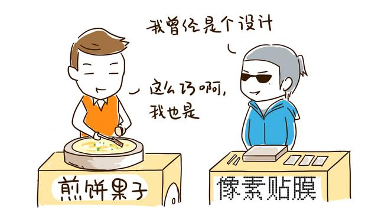
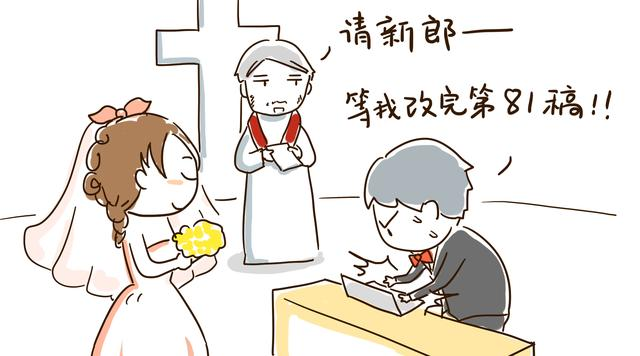
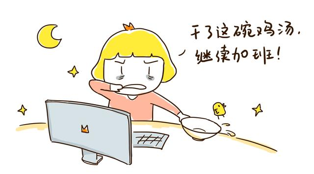
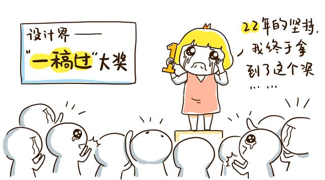
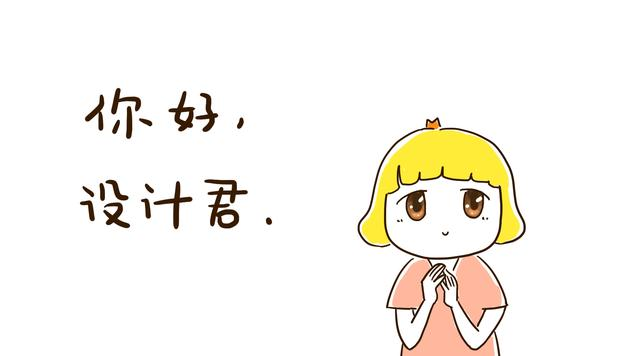

“这个设计我不做了”
“是这个设计不做了，还是你不做设计了””
“我…””
“你想好了再和我说”
开场的对话作为设计师的你，有经历过么？是什么原因让你说出“我不想做了” 这样的话？是这个设计不做了，还是你不要做设计这个工作了。
大部分人说,做设计的都比较辛苦，也许工资不错，但是对于大多数设计师而言,也不可能很高,也就那样吧。而且常常设计过程中要受到多人摆布，经常成品出来后，与最初的想法有很大差距。很多设计师从业一段时间后就不做了,有的毕业就转行了。压根就没进入到这个行业里面。

小安在知乎上看到这么一段话说:听闻设计师嗟叹，策划“虐”，需求改，设计惨；男盆友要看电影，不好意思我是设计我加班！女盆友做了新菜式，不好意思我是设计我加班！老婆生孩子，不好意思我是设计我加班！........

即使这般调侃自己,调侃这个行业,即使无数次呜咽着说我不做了.最后还是会从床上爬起来改稿!—同时自言自语道:老子又复活了,不是改吗?放马过来啊!
于是我们的设计生活就这样不断的跌倒…爬起...跌倒..又爬起..
So,今天小安就来和大家聊一聊这个话题
说一说你为什么还在坚持做设计？
前几天晚上在微博上发出这个话题,不得不说大家都很关注这个点,短短30秒钟就get到40多条评论。
随机抽选了几条,大致可分成3类:
1、鸡汤类
2、逗比类
3、情真意切类
先看情真意切版:
1、简夏呀:再也找不到可以像设计如此这般虐我,依旧拿它当初恋一样热爱的事儿了。
设计大家都是啊,客户虐我千万遍,我待客户如初恋!
2、叫我懒癌患者：因为当初学了这个专业.不想浪费我上学学到的知识
话说小安当时大学学的可是医药专业..这么多年过去了.现如今还不是连罗红霉素和青霉素都傻傻分不清楚.
3、我们的美丽插画师小馋姐姐说到:唯一能让我把吃饭的时间,一再推后的事情.
宝宝表示很认同,作图的时候什么都忘了.
我们再来看看鸡汤版的理由:
1、青春正微笑：因为，想让她看到这个世界上最美的东西
(最美的难道不应该是我么,害羞捂脸奔走~)
2、TANGTANG-marshmellow：因为还有信仰，因为还有梦想，不想变成咸鱼所以辛苦着却还在坚持
3、侯哥笑眯眯：看到丑的东西不能忍的那颗希望改变的心
这个我表示认同呢,自从进了设计这个行业,很多画面在自己眼中都变得惨不忍睹,到底是我变了还是他们变了...
4、小谲子：因为喜欢，有一种创造的感觉

前方高能请注意,画风突转:段子来袭
1、沉默君-：因为不想做销售啊摔（销售招你惹你了？）
2、Seven凉奈：年轻的时候脑袋进了水。（话说—水干了没?）
3、徐1博：因为温州皮革厂倒闭了！（这位同学,原谅我没有get到这个点呢..明白的同学可以告诉我呀）
4、你在我的航线上：因为编程太难...... （对啊对啊 难道不是因为编程太难,所以我们做了设计吗?）
5、香哥的怪盗史：幻想着以后会是这个行业的大咖，出一个作品都要被很多人（分析模仿抄袭，然而其他人一看就知道这个啊是借鉴谁谁谁的风格 ）
6、猥琐大叔很爱萌：改变世界……
类似的理由,其实还有很多.五花八门,但好在结果都是我们仍然在做着设计,仍然在这个行业里奋斗着。
一个叫花棉袄大神的朋友说到:做设计很好啊,小时候就想做服装设计，然后珠宝设计，建筑设计。。虽然都没成吧。做设计把东西成真感觉多爽啊。现在做ui设计。虽然跟小时候得没啥联系，但好歹是落实了自己的想法. 工作比机械式的重复好多了。
所以,当我面对那句是这个设计不做了，还是你不做设计了这句话时,我知道,我怎么也不可能真正放弃的.我们喜欢那种从无到有的成就感,并且享受被虐的快感。
至于我自己坚持做设计的理由就是:我需要这种主动改变所赋予自己的成就感。
前几天看到优设的一篇文章<前辈经验,聊聊新人设计师最容易遇到的12个问题>其中一段话是这么说的:
我们都容易错把没有尽力或者短暂的没有灵感当做是遇到了瓶颈期，盲目以为走反的方向就是突破，为什么瓶颈期这个词这么容易说出口呢？也许是因为太渴望进步，这种渴望让你都无法静下心来做好你该做的事情了，是否瓶颈期不用时常挂嘴边，我们需要做的仍然还是专心做好自己该做的事情，没有灵感了，就出去透透气，跟朋友唠唠嗑，多看，没准儿灵感就来了。
就像文章里说的,我们需要自我调节,你可以一天咆哮十遍老子不干了,但是转个身出去透透气 回来依然会稳坐在电脑前.请不要轻易的放弃当时的选择,也许很难,但是设计这个事儿,除了保证了你的温饱还让你的生活充满乐趣,不是吗?
自从开始做电台,很多朋友都知道了我的微博,除了每日关注我的碎碎念之外,也会私信我询问一些问题,包括像我倾诉一些工作中的困扰,希望能从我这里得到解决或者说希望能从我这里得到安慰.大部分朋友私信我和我说着类似的苦恼,比如说在设计这条路上很难,担心自己半途而废,不能坚持到底.比较郁闷的是有人告诉我说,自从做了设计,我的耐性就变得很差,脾气就变得很暴躁,关于坚持更是没什么力度,做不出期望的样子就会萌生退意。有什么好方法解决吗?
要坚持做一件事或者说要坚持做好一件事,其实需要意志力。也就是控制自己行为的能力。而绝大多数人包括我在内,天生都是个意志薄弱的种子选手。总有意志薄弱的时候,十全十美的去控制自己是很难得。所以,我们需要给自己一个理由。
对于询问者,我给他们的回答一般都是--想想你原来为什么这么选择,并且坚持做下来了。
但是我猜测,我的这种回答和沟通方式并没有完全帮助到他们,因为他可能真的不知道,用什么来坚持,来继续。
我坚信,生命是一种长期而持续的累积过程,我们唯有找到自己坚持的理由才更好的走下去。我说我坚持的理由是我需要这种主动改变所赋予自己的成就感。不可否认,在很大程度上,我比较虚荣,比较在乎精神文化.说白了就是玻璃心...在某些事情上强烈的期望被认可。设计这个行业满足了我的这种需求。我很享受这种从有到无的成就感,从简单的概念到潦草的线图一步步从我的手上转变成完整的画面,并让别人认可这个过程。很多网友在评论中也提到了这点,设计这个行业,它让我把脑中的幻想很好的展现成实际。即使不是所有人都认可和喜欢,我也甘之如饴。
就像我做电台,在最开始,我就已经做好了总有人不喜欢我的心理安慰。我的付出,是给那些喜欢并且支持我的朋友,总有一些人让我知道,你的坚持没错。
小李子坚持了22年,奥斯卡把小李子的小金人还上了 那我坚持了这么多年,总监欠我的一稿过啥时候给啊？我就问问啥时候给？我也好歹坚持这么多年了,风雨无阻的,赏我个一稿过特权呀~给宝宝打打鸡血!

你需要一种成就感来鞭策自己更好的前行,也许你不需要做的有多好,但是只要你坚持做下去,就一定会有收获.最近貌似反复的再说这段话,也是因为我自己深有感触。也许是乐趣,也许是因为不不想废弃的专业,也许是因为想让他看到更美的世界,请坚持你的选择。也要相信,设计这件小事,总有一天,会还给你无限的成就感!
生活就像围城，有的人想出去，有的人要进来。不管怎么样，嘿! 既然来了,就别走了 : )

插画作者：啾啾啾小宛子

 Hi，Welcome！
Hi，Welcome！